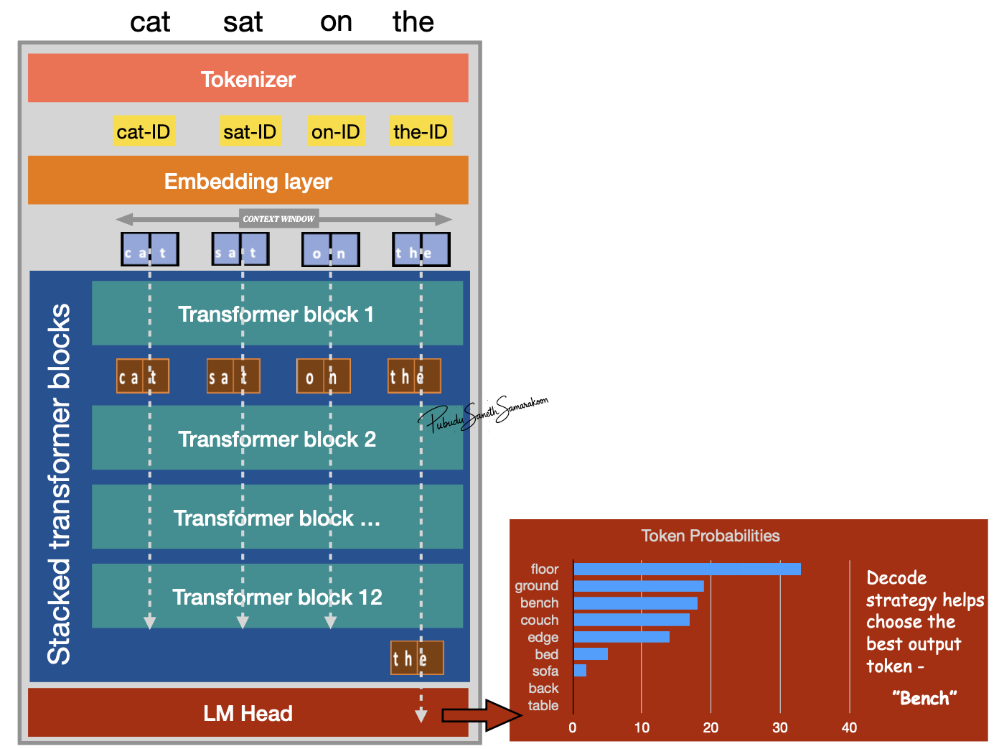
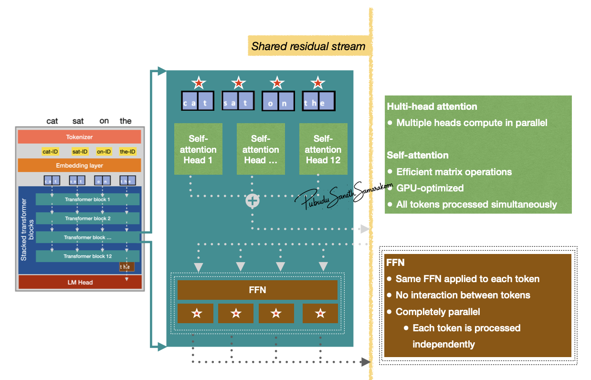

Dataflow across LLM
Objectives
Explore the data-flow and data parallelization in a LLM
Dataflow across the LLM

Single forward pass through LLM:
Tokenizer process input text to sub-word units represented in token-IDs (integers)
Embedding layer convert token-IDs into vectors (embeddings)
Stack of transformer blocks for sequential transformation and enriching context of all tokens
LM head: for probability calculation and next token prediction
Context Window
The maximum number of token the model can handle simultaneously in a single forward pass
Note
Dataflow Constraint: As the autoregressive loop adds more tokens, if the sequence length exceeds this window, the model must truncate or “forget” the earliest tokens, meaning they no longer contribute to the calculation of future predictions.
Autoregressive Loop: The model selects the next token based on these probabilities (decoding), appends it to the original input sequence, and feeds this new, longer sequence back into the start of the model to generate the subsequent token.
Data parallelization in LLM
